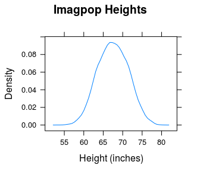

We begin by recalling our imaginary population, consisting of 10,000 individuals:
data(imagpop)
View(imagpop)
help(imagpop)Let’s examine the population distribution of the variable height (see Figure [Imagpop Height]): the distribution appears to be roughly normal.
Imagpop Height.
From the population data, we can compute a wide variety of numbers. Numbers that are computed using the entire population are called parameters.
Here are a few parameters for imagpop:
favstats(~height,data=imagpop)## min Q1 median Q3 max mean sd n missing
## 53.8 64.7 67.5 70.3 80.2 67.53012 3.907014 10000 0When we apply favstats() to a population, everything it returns is a parameter. We have such things as:
Let’s look at another variable from imagpop, namely the categorical variable sex:
xtabs(~sex,data=imagpop)## sex
## female male
## 4968 5032We see that, of the 10,000 members of the population, 5032—or 50.32%—are male. The 50.32% figure is the population percentage of males; we also say that the population proportion of males is 0.5032. Both of these quantities are parameters, since they are numbers associated with the population.
If you are lucky enough to have information on all the entire population, as we do with imagpop, then you can see a lot of parameters at once by calling the summary() function:
summary(imagpop)We show below only the results for the first four variables in imagpop:
## sex math income cappun
## female:4968 no :9537 Min. : 200 favor :2976
## male :5032 yes: 463 1st Qu.: 19300 oppose:7024
## Median : 33600
## Mean : 40317
## 3rd Qu.: 54100
## Max. :262200We have learned that a parameter is a number associated with a population. Usually we would like very much to know the numerical value of one or more parameters, but for practical reasons we are unable to examine every member of the population in order to compute these parameters. Usually the best we can do is to take a random sample from the population, and compute numbers based on that sample. Such numbers are called statistics.
Usually, we are interested in computing statistics that might serve to estimate some parameter.
Let’s do an example. Suppose that we only have time to take a sample of 10 members from imagpop. The function popsamp() will take a simple random sample from any given data frame, of any given size:
popsamp(n=10,pop=imagpop)## sex math income cappun height idealheight diff kkardashtemp
## 7210 female no 39700 oppose 65.6 67 1.4 2
## 8757 female no 81000 favor 64.3 66 1.7 4
## 7609 male no 35100 favor 70.9 74 3.1 78
## 8859 male no 35900 oppose 70.4 73 2.6 80
## 4563 male no 16100 oppose 73.5 76 2.5 80
## 1663 female no 66600 oppose 69.0 71 2.0 10
## 3250 male no 37900 oppose 63.1 65 1.9 99
## 5089 male no 77300 oppose 68.4 71 2.6 93
## 7272 male no 62600 favor 70.4 73 2.6 96
## 9889 female no 59300 oppose 59.0 61 2.0 3If you run the function several times, you will most likely get a different sample each time.
Now let’s compute some statistics from a sample: this time, let’s sample n = 100 members from the population by simple random sampling. We’ll use the summary function to compute a lot of statistics at once (but we’ll show the output just for the first few variables:
summary(popsamp(n=100,pop=imagpop))## sex math income cappun
## female:49 no :91 Min. : 400 favor :25
## male :51 yes: 9 1st Qu.: 14625 oppose:75
## Median : 28350
## Mean : 36676
## 3rd Qu.: 48325
## Max. :207000If you try it yourself a few times, you will see that that the statistics vary, from sample to sample. This makes, sense, because the sample itself is random. In fact, a statistic is always a random variable!
You can practice more with the idea of a statistic as a random variable by playing again with the app SimpleRandom(), introduced in Chapter 5:
require(manipulate)
SimpleRandom()For any variable you selected, you see that the statistics hop around from sample to sample, but on the whole each statistic more or less resembles the parameter in the table one row above it. In fact, that’s why we compute statistics:
What Statistics Are For: We use statistics to estimate parameters.
Used in this way, a statistic is called a point estimate for the parameter it is used to estimate.
Even though we know it is highly unlikely to be exactly equal to the parameter, a well-chosen point estimator constitutes our single “best guess” as to the value of the parameter in question.
To summarize:
Often—not always, but quite often—a Research Question can be construed as a question about the value of one or more population parameters. If you can learn how to turn Research Questions into questions about the value of parameters, then you gain access to an array of powerful statistical techniques.
We will learn how to turn Research Questions into questions about parameters by trying out lots of examples. To start, we’ll keep these examples focused on imagpop.
Consider the following
Research Question: We would like to know the center and spread of height in the population.
From the statement of the Research Question, we see that we are interested in:
imagpop, andimagpop.One could also construe this Research Question as a question about population median, and population IQR. As a rule, though, we will go with mean and SD as a first preference.
We next consider a sequence of Research Questions that connect to a standard set of parameters. These parameters crop up so frequently that each will be accorded its own separate sub-section in this Chapter.
Research Question: We would like to know the mean rating that people in
imagpopgive to the celebrity Kim Kardashian.
In this example, the parameter of interest is pretty obvious. We are interested in knowing:
\(\mu\) = mean Kim Kardashian temperature rating for
imagpop.
Research Question: We would like to know the proportion of people in the population who majored in math.
Again the parameter of interest is fairly obvious. We are interested in knowing:
\(p\) = the proportion of all persons in
imagpopwho majored in math.
Research Question: We wonder how much taller guys are, on average, than gals.
This time, we break imagpop into two separate populations: all of the females, and all of the males. The parameters we are interested in are:
\(\mu_1\) = mean height of all males in
imagpop
and
\(\mu_2\) = mean height of all females in
imagpop.
Wanting to know how much taller the guys are, on average, is the same thing as wanting to know the difference of means \(\mu_1 - \mu_2\). This becomes our parameter of interest.
Here is another example. Suppose we are interested in the following
Research Question: Do math majors make more money, in average, than non-math majors do?
Again, we break imagpop into two populations: all of the math majors, and all of the non-math majors. The parameters we are interested in are:
\(\mu_1\) = mean annual income for all math majors in
imagpop
and
\(\mu_2\) = mean annual income for all non-math majors in
imagpop.
Wanting to know whether math majors make more money is the same as wanting to know whether the difference of means, \(\mu_1 - \mu_2\), is positive.
Watch out, though, for the following type of question:
Research Question: It is known that the mean height for the population of Australia is 67 inches. Do people in
imagpophave the same height, on average?
You might think that this is another question about the difference of two means. However, we already know the mean height of all Australians, so really we are interested in just one population mean:
\(\mu\) = mean height of all people in
imagpop.
We just want to know whether or not \(\mu = 67\).
In order to be in a “difference of two means” situation, we should be dealing with two populations, and we should not know the mean of either population. Also, our plan should be to take two independent samples, one from each population, and to estimate each of the means from these samples.
(Note: “Independent” means that the samples don’t have anything to do with each other: knowing who is in one sample tells you nothing about who is in the other sample.)
Suppose we are interested in the following
Research Question: Who is more likely to favor capital punishment: a guy or a gal?
This one is tricky for many students; the key is to interpret “likelihood” as probability. Probabilities are between 0 and 1, so they are proportions. Hence the question is really asking:
Which is bigger: the proportion of all males who favor capital punishment, or the proportion of all females who favor capital capital punishment?
When you ask the question this way, you see that it is a question about two populations:
Within each population, some proportion of people favor capital punishment, and we want to know which of the two proportions is larger. So are parameters of interest are:
\(p_1\) = the proportion of all males in
imagpopwho favor capital punishment;
and
\(p_2\) = the proportion of all females in
imagpopwho favor capital punishment.
We are interested in the difference of these two proportions: \(p_1-p_2\).
For our next research question, we will move back to the familiar mat111survey data. The population from which this sample was drawn is, of course, the population of all GC students.
Research Quetion: Do people at Georgetown want to be taller than they actually are?
This is another tricky one. Many people say: “there are two populations means at issue here: the mean actual height of the population, and the mean ideal height of the population. We want to know if the second mean is larger than the first. Hence we are interested in the difference of two means.”
This isn’t quite right. Recall that in order to be dealing with the difference of two means, we need to be in the situation of taking two independent samples from two populations. But this time we have one sample, from one population: it’s just that we did a repeated-measures study by asking each individual two questions—actual height and ideal height.
Remember that in a repeated-measures study, you focus on the difference between the two measurements. Hence we are actually interested in the following parameter:
\(\mu_d\) = the mean of the difference between ideal height and actual height, for all students at Georgetown College.
For another example, let’s look back at the labels-and-perception experiment:
data(labels)
View(labels)
help(labels)In connection with the labels data, we are probably interested in the following
Research Question: On average, which label results in the higher rating for the peanut butter: Jiff or Great Value?
This was a repeated measures design, and we are interested in the difference between the two ratings. So we are interested in:
\(\mu_d\) = mean difference in ratings (Jiff rating - GC rating) for all Georgetown College students.
Notice that we were careful to make the parameter refer to the entire population from which the sample of 30 students was drawn. A parameter is a numerical feature of a population!
In general, research questions associated with matched-pair and repeated-measure studies are likely to turn into questions about a mean of differences.
Practice: For each of the following Research Questions, define the parameter(s) of interest, and then restate the Research Question in terms of that (or those) parameters.
- (For the
m111surveydata.) Research Question: UK students are known to have a mean GPA of 3.0. Is the mean GPA of all Georgetown College students higher than the mean at UK?
- (For the
m111surveydata.) Research Question: Who drives faster on average: Georgetown College males or GC females?
- (For the
m111surveydata.) Research Question: Do a majority of GC males believe in love at first sight?
- (For the
m111surveydata.) Research Question: Who is more likely to believe in love at first sight: A GC male or a GC female?
- (For the
m111surveydata.) Research Question: Who wants to increase their height more, on average: GC males or GC females? (Think carefully about this one!)
At the elementary level there are five types of Research Question that come up so frequently that the parameters associated with them are called the Basic Five:
We have already seen one or more examples of each of the Basic Five, and we’ll see many more examples in the future.
Most of the examples of Research Questions that we considered in the previous section were based on observational studies, in which the data was considered to be a sample from some larger population. Because of the issues involved in obtaining consent for inclusion in an experiment, we may or may not be able to consider the subjects in an experiment as a random sample from some larger population, and even when we can, we often speak about that population a bit differently than we do for observational studies.
Let’s consider a couple of examples.
To begin with, look at m111surveyfa12:
data(m111surveyfa12)
View(m111surveyfa12)
help(m111surveyfa12)Most of the Research Questions associated with this data frame may be considered as arising from an observational study. For example, the Research Question: “who drives faster, on average a male or female?” is based on an observational study, since the explanatory variable here is sex, and the values of sex cannot be assigned to subjects by researchers.
On the other hand, consider the question about the population of Canada. When subjects filled out their survey forms, some of the subjects were looking at forms where the question about Canada was stated as follows:
“The population of Australia is about 23 million. What do you think is the population of Canada? (Give your answer in millions.)”
The rest of the subjects were looking at forms where the question about Canada was stated as follows:
“The population of the United States is about 312 million. What do you think is the population of Canada? (Give your answer in millions.)”
The country whose population is given is called an anchor. Behavioral psychologists tell us that anchors can affect the way we think about that question, even when the anchor has no logical bearing on the question itself.
If everybody processes information in a completely rational way, then one’s answer about Canada would be the same, no matter whether one is told first about Australia or about the United States. The “Canada” question was not asked because we were interested in how well Georgetown College students know geography trivia: we were actually interested in the question of whether Georgetown College students process information rationally! In other words, the Research Question was:
Research Question: Who gives a higher estimate, on average, for the population of Canada: a person who was first told the population of the United States, or a person who was first told the population of Australia?
In this question, the explanatory variable is anchor (the type of form) and the response variable is canada. Since researchers were able to assign forms to subjects (for the most part they attempted to do so randomly), they were performing an experiment.
Here is how we translate the Research Question into a question about parameters. The parameters of interest are:
\(\mu_1\) = the mean estimate of the population of Canada given by all GC students, if all of them could have been given a form in which they are first told the population of Australia.
\(\mu_2\) = the mean estimate of the population of Canada given by all GC students, if all of them could have been given a form in which they are first told the population of the United States.
The Research Question turns into a question about whether the difference of means, \(\mu_1 - \mu_2\), is zero or not. A difference of zero would indicate that, on average, the anchor made no difference in the response.
We have met several examples before of the difference of two means. The previous examples, though, were based on observational studies, and in that case there were two populations, and the plan was to take two independent simple random samples separately from the two populations.
In this experiment, there is just one population: all Georgetown College students. We simply imagine that the population is treated in two different ways:
By taking one sample from the population—the MAT 111 students who took the survey—and breaking them into two treatment groups (students with the Australia form and students with the U.S. form) we obtained two samples: one from each imaginary population. The samples aren’t really independent (if George is given an Australia form then you know for sure that he will not be picked to get a U.S. form), but that’s how it is with experiments.
Let’s look at another example. Recall the Knife or Gun study:
data(knifeorgunblock)
View(knifeorgunblock)
help(knifeorgunblock)Remember that we were interested in the
Research Question: What makes a person yell louder: being killed with a knife or being killed with a gun?
For this experiment, we know in advance that the results probably don’t apply to some larger population, because anyone who would agree to be part of an experiment in which they get killed is liable to be extremely different from the general population—perhaps in ways associated with how they respond when being attacked with knives and guns! This fact affects how we define the parameters of interest. In this case, the parameters are defined as follows:
\(\mu_1\) = the mean volume of yells for all 20 subjects, if they could have all been killed with a knife.
\(\mu_2\) = the mean volume of yells for all 20 subjects, if they could have all been killed with a gun.
This time the so-called population is just the set of subjects themselves, not some larger group out of which the subjects are a sample. Just as in the previous example, though, we do imagine that this set of subjects is treated in two different ways, so we still have two “imaginary” populations.
You should define your parameters in this more restrictive way whenever the subjects in your experiments cannot be considered as representative of some larger population.
In both of the examples above, the experiment had two treatment groups and the response variable was numerical. This resulted in a difference of two means situation. If your experiment has two groups and the response variable is categorical with two values (e.g., “yes” or “no”), then you will end up being interested in the difference of two proportions.
As an example, consider the attitudes experiment:
data(attitudes)
View(attitudes)
help(attitudes)The question about spending habits involved an experiment: some of the subjects were looking at a form in $20 was lost simply by the money falling out of a purse or wallet somehow. Other subjects faced a scenario in which they had lost $20 by purchasing a ticket and then losing that ticket. Either way, the subject is down by $20, so if everyone makes financial decisions on a purely rational basis, then one’s decision about whether to attend the rock concert anyway should be unaffected by what form one is looking at: a person who would elect to attend the concert after having lost money would also elect to attend after having lost a ticket, and vice versa.
Obviously we are interested in the same sort of behavioral psychology question as in the earlier anchor experiment on guessing populations:
Research Question: Who is more likely to elect to attend the rock concert: a person who has lost $20 in cash, or a person who has lost a $20 ticket?
The response variable is the categorical variable conc.dec, which has two values (“buy” and “not.buy”), so the parameters of interest must be proportions:
\(p_1\) = the proportion of all GC students who would elect to attend the rock concert, if all of them could be given a survey form describing a scenario where they have lost $20 in cash.
\(p_2\) = the proportion of all GC students who would elect to attend the rock concert, if all of them could be given a survey form describing a scenario where they have lost a $20 ticket.
We are interested in the difference of two proportions \(p_1-p_2\). If this difference is 0, then the way loses one’s money has no effect on the likelihood of whether one will buy a ticket anyway.
Practice. Consider the attitudes dataset, and the Research Question: On average, does the suggested race of the defendant affect the length of sentence that would be recommended by a Georgetown College student? Define appropriate parameters and translate the Research Question into a question about these parameters. Which one of the Basic Five is represented here?
As we said earlier, people like to use a statistic – a random variable that is computed from a sample – to estimate a parameter. Let’s talk about the statistics that are used to estimate the Basic Five parameters.
To estimate one mean, \(\mu\), we take a simple random sample and compute the sample mean, which is written \(\bar{x}\). As we know from previous chapters,
\[\bar{x} =\frac{\sum x_i}{n},\]
which is to say that it is the sum of the values in the sample, divided by the sample size.
This makes good sense. After all, the population mean \(\mu\) is the sum of all of the values in the population, divided by the number of individuals in the population, and a random sample is (hopefully) a fair representation of the population. So it seems we should estimate the mean of the population by calculating the mean of the sample.
You might wonder how good a job \(\bar{x}\) does, as an estimator of \(\mu\). Statisticians have studied this question, and the short answer is: “It does a very good job indeed!” A slightly more detailed answer starts by pointing out that \(\bar{x}\) is a random variable—it is, after all, a number that depends on chance—so it has an expected value (EV for short) and a standard deviation (SD).
Recall from previous chapters that the EV of a random variable is what you expect to get, on average, in many “tries” of the random variable. Statisticians have proven that
\[EV(\bar{x})=\mu.\]
Recall also that the SD of a random variable is about how much the random variable is liable to differ from it’s EV. Statisticians have proven that the SD of \(\bar{x}\) is:
\[SD(\bar{x}) =\frac{\sigma}{\sqrt{n}},\]
where \(\sigma\) is the SD of the population, and \(n\) is the size of the sample.
Always keep in mind how EV and SD work together to describe how a random variable is liable to turn out. Now that we know the formulas for EV and SD of \(\bar{x}\), we can say:
When you take a simple random sample of size \(n\) from a population, the sample mean \(\bar{x}\) is liable to be about \(\mu\), give or take \(\frac{\sigma}{\sqrt{n}}\) or so.
When you want to estimate the difference \(\mu_1-\mu_2\) between the means of two populations, you could take a simple random sample from each population and compute:
You could then subtract these two sample means. The difference, \(\bar{x}_1-\bar{x}_2\), would be an estimator for \(\mu_1-\mu_2\).
Statisticians have shown that the EV of \(\bar{x}_1-\bar{x}_2\) is:
\[EV(\bar{x}_1-\bar{x}_2)=\mu_1-\mu_2.\]
The SD of \(\bar{x}_1-\bar{x}_2\) is:
\[SD(\bar{x}_1-\bar{x}_2)=\sqrt{\frac{\sigma_1^2}{n_1}+\frac{\sigma_2^2}{n_2}}.\]
This is a fairly complicated-looking quantity. Let’s work with a numerical example:
Example: Suppose that the population of all GC males has a mean height of 71 inches, with a standard deviation of 3 inches. Suppose also that the population of all GC females has a mean height of 68 inches, with a standard deviation of 2.5 inches. You plan to take a simple random sample of 25 males and an independent simple random sample of 36 females. You plan to estimate \(\mu_1-\mu_2\), the mean GC male height minus the mean GC female height, by \(\bar{x}_1-\bar{x}_2\), the difference of your sample means.
(1). About what do you expect \(\bar{x}_1-\bar{x}_2\) to work out to be?
(2). Give or take about how much?
As for the first question, we expect \(\bar{x}_1-\bar{x}_2\) to work out to about its EV, which is:
\[\mu_1-\mu_2 = 71-68 = 3\]
inches.
For the second question we need to compute the SD, and we might as well have R do the work for us. From the given information, we seen that:
We then plug these values into the formula for \(SD(\bar{x}_1-\bar{x}_2)\), using R as a calculator to do the arithmetic for us:
sqrt(3^2/25+2.5^2/36)## [1] 0.7304869So we expect \(\bar{x}_1-\bar{x}_2\) to work out to about 3 inches, give or take 0.73 inches or so.
When you need to estimate a population proportion \(p\), you could take a simple random sample (let’s abbreviate this as SRS, shall we?) and count the number \(X\) of individuals in the sample who possess the characteristic of interest. You could then divide \(X\) by \(n\), the size of the sample, to get a proportion. This is called – naturally enough – the sample proportion, and it is written symbolically as \(\hat{p}\). So the sample proportion is:
\[\hat{p}=\frac{X}{n},\]
and it is used to estimate the parameter \(p\). Roughly, you can think of the sample proportion as: “the number of yesses, divided by the number of people you asked.” The population proportion can be thought of as: “the number of yesses in the population, divided by the population size.”
The EV of \(\hat{p}\) is just \(p\), the population proportion. The SD of \(\hat{p}\) is:
\[SD(\hat{p})=\sqrt{\frac{p(1-p)}{n}},\]
where \(n\) is again the sample size.
Here is an example of the use of these formulas.
Example: 40% of the individuals in a certain population think that marijuana use should be legal. A social scientist, who does not know this fact, would like to estimate the percentage of folks who think marijuana should be legal. She plans to take a SRS of 400 individuals, and compute the proportion of the sample who think marijuana should be legal. Fill in the blanks: “Her estimate is liable to be around ______ %, give or take ______ % or so.”
Answer: The EV of \(\hat{p}\) is \(p\), which in this case is 0.40. Hence the first blank should be filled in with 40 (percent). The second blank should contain the SD of \(\hat{p}\), multiplied by 100 to make it a percentage. Again we can just use R as a calculator:
sqrt(.4*(1-.4)/400)*100## [1] 2.44949So we should fill in the second blank with 2.45 (percent).
When you need to estimate the difference between two population proportions \(p_1\) and \(p_2\), you can:
The EV of \(\hat{p}_1 - \hat{p}_2\) is:
\[EV(\hat{p}_1-\hat{p}_2)=p_1-p_2.\]
The SD of \(\hat{p}_1 - \hat{p}_2\) is:
\[SD(\hat{p}_1 - \hat{p}_2) = \sqrt{\frac{p_1(1-p_1)}{n_1}+\frac{p_2(1-p_2)}{n_2}}.\]
You estimate \(\mu_d\) for a population by taking a SRS of size \(n\), say, and computing the \(\bar{d}\), the sample mean of the differences. The EV of \(\bar{d}\) is \(\mu_d\), and the SD of \(\bar{d}\) is:
\[SD(\bar{d})=\frac{\sigma_d}{\sqrt{n}},\]
where \(\sigma_d\) is the standard deviation of all of the differences in the entire population.
You have probably observed that, for each of the Basic Five, the EV of the estimator is exactly the parameter you are trying to estimate! When the EV of an estimator equals the target parameter, then the estimator is said to be unbiased. The estimators for the Basic Five are unbiased, but not all estimators are unbiased.
Probably you have also noticed that for the SD of each of the Basic Five estimators, there are samples sizes in the denominators:
Now when the denominator of a fraction gets bigger, the fraction gets smaller, for example:
This observation leads to the following important point:
For means and proportions, the larger the sample size the smaller the SD of the estimator will be.
In other words:
The larger the sample size, the less chance variation there is liable to be.
This makes sense intuitively, as well. You might want to revisit the SimpleRandom() app, and this time vary the sample size.
require(manipulate)
SimpleRandom()You will notice that at large sample sizes the estimators tend to approximate their target parameters quite closely. This is due to the fact that at large sample sizes their SDs are small.
Important Note!! The formulas for SD of the Basic Five Estimators are all based on taking a simple random sample from the population. For other probability sampling methods—such as stratified sampling, cluster sampling, and systematic sampling—the formulas are different and more complicated. Also, even for simple random sampling the formulas we have given are only approximately right. See the GeekNotes for the full story!
For each of the Basic Five estimators, we can now say two things about its distribution:
When we describe a distribution, we also want to describe its shape. What are the shapes of these estimators? The following sequence of apps may help you to formulate a partial answer to this question.
The first app deals with sampling from one population, in order to estimate one proportion. For a fixed sample size, take samples one by one, and watch the density plot of the sample proportions take shape.
require(manipulate)
PropSampler(~cappun,data=imagpop)Try the app first for a small sample size. Ask yourself these questions:
Try a much larger sample size, and ask yourself the same question.
The second app deals with sampling from one population, in order to estimate one mean:
MeanSampler(~income,data=imagpop)Again for a fixed sample size take samples one by one, and watch the density plot of the sample take shape. Try at least three samples sizes, including \(n=1\) and \(n=30\). At each sample sizes, ask yourself the same questions about shape as before:
The third app moves a bit more quickly. For any numerical variable you choose, and for any sample size you choose, the computer will draw 1000 simple random samples, compute the mean of each sample, and make a histogram of the results.
SampDistMean(imagpop)Try the same sample size several times. Then change the sample size, and try it a few more times. Keep changing sample sizes. Then do the whole thing over, for a new numerical variable. Is there a pattern to what you have observed?
The fourth app is similar, except that it deals with estimating the difference of two means:
require(manipulate)
SampDist2Means(imagpop)Again, play with sample sizes and with the various combinations of variables, and think a bit about what you noticed.
Finally, an app that that explores estimation of the difference between two proportions:
require(manipulate)
SampDist2Props(~sex+cappun,data=imagpop)Try it as before, but also vary the combination of variables. (For example, try ~sex+math.) Again, think about what you notice.
Before you go any further, make sure you have thought carefully about any patterns you might have observed.
One of the things that you may have noticed is that no matter how the underlying population is distributed, the distribution of each of the Basic Five estimators looks more and more “bell-shaped” as the sample size increases. This phenomena comes from the famous:
Central Limit Theorem: For any population with a finite mean \(\mu\) and finite standard deviation \(\sigma\), the distribution of the sample mean \(\bar{x}\) gets closer and closer to
\[norm(\mu,\frac{\sigma}{\sqrt{n}})\]
as the sample size \(n\) gets larger and larger.
Although the Central Limit Theorem applies directly to the sample mean only, it can be used to show that each of the other Basic Five Estimators looks normally distributed, at “large enough” sample sizes. A sample proportion, for example is like a mean, because it involves dividing by the sample size \(n\). Hence \(\hat{p}\) is normal-looking, if \(n\) is big enough. The difference of two sample means will also look normal, because the difference of two independent normal random variables is also normal. The same idea helps us to see that the difference of two sample proportions will also be normal, when both samples sizes are large.
How large does \(n\) have to be to be “large enough”? For most populations you encounter:
The more skewed the population is, the larger the sample size needs to be before the distribution of \(\bar{x}\) looks normal—you may have noticed this when you were playing with the apps. Nevertheless, we don’t often run across a population that is so skewy that the sample size \(n=30\) is still “too small”. Also, if the underlying population is pretty close to bell-shaped, then the distribution of \(\bar{x}\) will be approximately normal, even when the sample size \(n\) is quite small. (You may have noticed that in the apps, too!)
Imagine that you are a very powerful being: you can find out everything about the present world that you would like to know, all in a flash. But you are not all-knowing: you cannot know the future. Hence you are not God—-maybe you are more like Zeus or Athena, or one of the other deities from Mount Olympus.
Since you can find out anything you want about the present world, you can know everything about a population. In particular you can know any population parameter that you like.
Now imagine that you are looking down from Mount Olympus, watching a poor statistician—a mere mortal—about to take a random sample from some population about which you know everything. Since you can’t know the future, you don’t know what his or her sample will contain, so you don’t know what the values of any of the estimators will be. But since you know the population, you know the distribution of the estimators: you known mean, the SD and the shape of each estimator.
Armed with this knowledge, you can answer all sorts of probability questions about an estimator: that is, you can determine how likely it is that the estimator will fall within any given range. Let’s try a few examples of this.
Example (1): A statistician is about to take a SRS of size \(n=25\) from
imagpopand compute \(\bar{x}\), the sample mean of the heights of the 25 selected individuals. What is the probability that the sample mean will exceed 68.3 inches? In other words, what is:
\[P(\bar{x} > 68.3)?\]
Solution: First of all, we use our god-like powers to find the mean \(\mu\) and the standard deviation \(\sigma\) of the heights in the population:
favstats(~height,data=imagpop)[6:7]## mean sd
## 67.53012 3.907014Now the distribution of \(\bar{x}\) is probably very close to normal. That’s because the underlying population of heights is already pretty bell-shaped. We know this because we can use our god-like powers to draw a density plot of the entire population:
densityplot(~height,data=imagpop,
xlab="Height (inches)",
main="Imagpop Heights",
plot.points=FALSE) The results appear in Figure [Imagpop Heights]. Indeed, the distribution of height is quite bell-shaped. Therefore, even though the intended sample size (\(n=25\)) is a bit lower than the suggested “safe” level of 30, \(\bar{x}\) should be quite normal, with mean 67.53 inches and SD equal to
\[\frac{\sigma}{\sqrt{n}}= \frac{3.907}{\sqrt{25}} \approx 0.78.\]
In symbols, we might say:
\[\bar{x} \sim norm(67.53,0.78).\]
So in order to find the probability we can just ask R to tell us the area under the appropriate normal curve after 68.3:
pnormGC(68.3,region="above",
mean=67.53,sd=0.78)## [1] 0.1617773So there is about a 16.2% chance that \(\bar{x}\) will exceed 68.3 inches.
Example (2): A statistician plans to take a SRS of 30 males from the population of all males in
imagpop, and an independent SRS of 40 females from the population of all women inimagpop. She will then compute \(\bar{x}_1-\bar{x}_2\), the sample mean height of the males minus the sample mean height of the females. Approximately what is the chance that the difference of sample means will be between 4 and 6 inches?
Solution: This time the samples sizes are \(n_1=30\) and \(n_2=40\). Both sample sizes are fairly large, so we can use the Central Limit Theorem to conclude that \(\bar{x}_1-\bar{x}_2\) is approximately normal.
Next, we need to compute the EV and SD of \(\bar{x}_1-\bar{x}_2\). For this we will need means and standard deviations of of the heights for:
imagpop, andimagpop.Hence we ask for:
favstats(height~sex,data=imagpop)[6:7]## max mean
## 1 76.2 64.99624
## 2 80.2 70.03178So the EV of \(\bar{x}_1-\bar{x}_2\) is
\[70.03-65=5.03\]
inches, and the SD of \(\bar{x}_1-\bar{x}_2\) is
sqrt(3.013^2^2/30+2.962^2/40)## [1] 1.722336So \(\bar{x}_1-\bar{x}_2\) is approximately \[norm(5.03,1.72).\]
Now we can get the desired probability:
pnormGC(c(4,6),region="between"
,mean=5.03,sd=1.72)## [1] 0.4389664So there is about a 43.9% chance that \(\bar{x}_1-\bar{x}_2\) will turn out to be between 4 and 6 inches. That is, there is about a 43.9% chance that the sample guys will be, on average, between 4 and 6 inches taller than the gals, on average.
Example (3): A certain roughly normal population has a mean height of 65 inches, with a standard deviation of 3 inches.
(1). You plan to select one individual at random from the population. Fill in the blanks, and explain: There is about a 68% chance that the selected individual will be between ____ and ___ inches tall.
(2). You plan to select 16 individuals from the population by simple random sampling. Fill in the blanks, and explain: There is about 95% chance that the mean height of the selected individuals will be between ____ and ____.
Answer to 1: The number 68 should remind you of the “68” part of the 68-95 Rule for Random Variables:
When the distribution of a random variable is bell-shaped, there is about a 68% chance that the random variable will land within one SD of it’s EV.
The EV of the height of a single randomly-selected person is just \(\mu\), the population mean, so the EV of this random adult is 65 inches. The SD for the height of the person is the SD for the population, and that’s 3. (You could also think of the height of one random person as the sample mean for a sample of size 1. Then the SD of this sample mean is \(\sigma/\sqrt(1) = 3/1 = 3\).)
Therefore, by the 68-95 Rule for Random Variables, there is about a 68% chance that this randomly selected person is between \(65-3=62\) and \(65+3=68\) inches. So we fill in the blanks with 62 and 68.
Answer to 2: When you sample \(n=16\) individuals, the EV and SD of \(\bar{x}\) are:
\[EV(\bar{x})=\mu=65, \\ SD(\bar{x})=3/\sqrt{16}=0.75.\]
By the “95” part of the 68-95 Rule, the approximately normal random variable \(\bar{x}\) has about a 95% chance of landing within two SDs of its EV, so we should fill in the blanks with \(65-2(0.75)=63.5\) and \(65+2(0.75)=66.5\).
Example (4): Suppose that forty-five percent of all registered voters approve of the job that the President of the U.S. is doing. Approximately what is the probability that, in a random sample of 1600 voters, between 43% and 47% will approve of the job that the President is doing?
Solution 1: We could turn this into a problem from Chapter 7. The number \(X\) of voters in the sample who approve is a binomial random variable, with the number of trials \(n\) is set at 1600 and with a probability of success on each trial equal to 0.45. Also:
So we are really asking for: \(P(688 \le X \le 752).\) We can get this with R:
pbinomGC(c(688,752),region="between",
size=1600,prob=0.45)## [1] 0.8976011So there is about an 89.7% chance that the sample proportion \(\hat{p}\) will be between 0.43 and 0.47.
Solution 2: This time we will use the normal approximation for \(\hat{p}\). It is certainly safe to do so, because for us:
Now the EV for \(\hat{p}\) is \(p\), which is 0.45. As for the SD of \(\hat{p}\), it is:
sqrt(0.45*(1-0.45)/1600)## [1] 0.01243734By the normal approximation, the answer we seek is:
pnormGC(c(0.43,0.47),region="between",
mean=0.45,sd=0.01243)## [1] 0.8923859Example (5): 50% of all OSU students favor stricter gun laws, and 40% of all UK students favor stricter gun laws. A statistician plans to take a SRS of 400 OSU students and an independent SRS of 900 UK students, and to ask the sample students if they favor stricter gun laws. Fill in the blanks, and explain: there is about a 95% chance that the difference in sample proportions (OSU minus UK) will be between _____ and _____.
Solution: First we find the EV and the SD of \(\hat{p}_1-\hat{p}_2\). The EV is just
\[p_1-p_2=0.50-0.40=0.10,\] and the SD is:
sqrt(0.50*(1-0.50)/400+0.40*(1-0.40)/900)## [1] 0.02986079Next, we note that the distribution of \(\hat{p}_1-\hat{p}_2\) is approximately normal. This is because:
By the 68-95 Rule, there is about a 95% chance that the approximately-normal \(\hat{p}_1-\hat{p}_2\) will land within 2 SDs of its EV. So we fill in the blanks as follows:
0.10-2*0.02986## [1] 0.04028or about 4.03%.
0.10+2*0.02986## [1] 0.15972or about 15.97%.
So far in this chapter, we have been imagining that we are deities who somehow can know everything about a population. This knowledge, together with a little statistical theory, allowed us to answer questions concerning the chances for a sample from the population to take on certain given values.
But now let’s turn it around, and take the point of view of a statistician, a mere mortal. Such a person does NOT know everything about the population. However, she has taken a sample from the population, and she can compute any number that is based on her sample. She would like to use statistics from her sample to estimate parameters in the population.
This statisticians has two primary questions:
- Based on my sample, what’s the best single guess at the population parameter?
- By how much is my best guess liable to differ from the actual value of the population parameter?
In the case of the Basic Five, the answer to Question 1 should be fairly clear: your best guess at a Basic Five parameter is the estimator for that parameter: e.g., your best guess at a population mean \(\mu\) is the sample mean \(\bar{x}\), and so on for the other four members of the Basic Five.
How about Question #2? This is a bit tougher. The statistician has the same access to statistical theory that a deity has: she knows that the estimator is liable to differ from the parameter by an SD or so. However, the formulas for the SDs all involve population parameters, so she cannot compute the numerical value of the SD.
For example, the SD of \(\bar{x}\) is \(\frac{\sigma}{\sqrt{n}}\). The statistician knows \(n\), the sample size, but she does NOT know \(\sigma\), the SD of the population. Hence it would seem that she cannot say anything about how much her estimate \(\bar{x}\) is liable to differ from the the target parameter \(\mu\).
There is a way around this, however. Since the statistician has the sample she can compute the sample standard deviation \(s\). Since \(s\) is an estimate of \(\sigma\), it stands to reason that the quantity
\[\frac{s}{\sqrt{n}}\]
could serve as an estimate of
\[\frac{\sigma}{\sqrt{n}}.\]
The quantity \(\frac{s}{\sqrt{n}}\) is known as the standard error of \(\bar{x}\), and it is often written \(SE(\bar{x})\) for short.
The SD for every Basic Five estimator has a corresponding SE. A mere mortal who knows only the sample can use the SE to estimate the SD of the estimator of the parameter of interest:
We will use the estimator and its SE together to say what we think the parameter is, and by how much we think our estimate might be off.
Example (1): Using the
mat111surveydata, estimate the mean height of the population of all GC students. Also, give a figure that indicates the amount by which your estimate might differ from the population mean.
Solution: We are interested in one population mean:
\(\mu\) = mean height of all GC students.
We therefore want \(\bar{x}\) and \(SE(\bar{x})\). For \(SE(\bar{x})\), we will need the SD of the sample, and we will need \(n\), the sample size. So we really need three things, and we can get them quickly with favstats:
favstats(~height,data=m111survey)[6:8]## mean sd n
## 67.98662 5.296414 71So:
Now we can get \(SE(\bar{x})\) by applying the formula:
5.296/sqrt(71)## [1] 0.6285196At last, we can answer the question that was originally asked: The mean height of all GC students is about 67.99 inches, give or take 0.63 inches or so.
Example (2): In a random sample of 2500 adults in the year 1995, 70% said they favored the death penalty. An independent random sample of 1600 adults in the year 2013 had 55% percent of them favoring the death penalty. Fill in the blanks, and explain: The difference in the proportions of adults who favor the death penalty (Year 1995 minus Year 2013) is about _______, give or take _______ or so.
Solution: It’s easier to answer this sort of question using summary data than with raw data (like we had in the previous example). We just need to plug into the formulas for the estimator and the SE of the estimator. The parameter of interest is a difference of two proportions, so we just plug into the formulas.
The estimator \(\hat{p}_1\) and \(\hat{p}_2\) is:
0.70-0.55## [1] 0.15That’s 15%. Now for the SE of \(\hat{p}_1-\hat{p}_2\):
sqrt(0.70*(1-0.70)/2500)+0.55*(1-0.55)/1600## [1] 0.009319839This is about 0.93%.
Now we can fill in the blanks: The difference in the percentage of adults who favor the death penalty (Year 1995 minus Year 2013) is about 15%, give or 0.93% or so.
Say that you are about to flip a fair coin. You don’t know how it will land, but you do know that there is a 50% chance that it will land Heads. Next, imagine that a friend has flipped a coin, and he is hiding it in his fist. You don’t know whether it’s Heads or Tails, but you feel 50% confident that it is Heads. Why? Because before it was flipped there was a 50% chance that it would land heads.
This idea about confidence carries over to more complicated random processes, including processes involving the random collection of data.
For example, say that you are about to take a large simple random sample from a population. Statistical theory, together with the 68-95 Rule, says that there is about a 68% chance that the sample mean \(\bar{x}\) will land within one SE of the mean \(\mu\) of the population. Therefore, if you have already taken a sample, you are justified in feeling 68% confident that \(\bar{x}\) actually did land within one SE of \(\mu\). Another way of saying the same thing is that you feel 68% confident that \(\mu\) lies within one SE of the \(\bar{x}\) that you got.
We encapsulate this idea in the
68-95 Rule for Estimation: If an estimator for a population parameter has a roughly bell-shaped probability distribution, then:
- we can be about 68%-confident that the parameter is within one standard error of the estimator;
- we can be about 95%-confident that the parameter is within two standard errors of the estimator;
- we can be about 99.7%-confident that the parameter is within three standard errors of the estimator;
Here is an example:
Example: You sample 36 people at random from a population, and find that their mean height is 68 inches, and that the SD of their heights is 3 inches. Fill in the blanks: you can be about 95%-confident that the population mean \(\mu\) is between _____ and _____.
For you, the value of \(\bar{x}\) is 68, and the SE of \(\bar{x}\) is:
\[3/\sqrt{36} = 3/6 = 0.5\]
inches. So, two SEs is 1 inch.
Hence you can feel 95% confident that \(\mu\), the mean height of all people in the population, is within 1 inch of 68, that is, between 67 and 69 inches.
People say that the interval of real numbers from 67 to 69 inches is a 95%-confidence interval for \(\mu\). Formulas for the confidence intervals we have produced using the 68-95 Rule for Estimation are often written out as follows:
\[\bar{x} \pm 1 \times SE(\bar{x}).\]
\[\bar{x} \pm 2 \times SE(\bar{x}).\]
\[\bar{x} \pm 3 \times SE(\bar{x}).\]
In each of the above formulas, the sample mean \(\bar{x}\) — the estimator for \(\mu\) — is smack in the middle of the confidence interval. The quantity after the \(\pm\)-sign — the number you subtract to make the lower bound of the interval and add to make the upper bound — is called the margin of error. As you can see the margin of error is the product of two further numbers:
The sample estimate determines the center and the margin of error determines the width of the confidence interval. Since the margin of error is determined by the multiplier and the standard error, we can see the role that sample size and confidence level play in the width of the confidence interval:
The larger the sample size, \(n\), the smaller the SE. So, larger sample sizes produce more narrower confidence intervals.
The higher level of confidence we have that an interval contains the true parameter value, the bigger the multiplier will have to be. So, higher confidence levels produce wider confidence intervals.
The confidence intervals formed by the 68-95 Rule for Estimation are somewhat “rough”, in the sense that they have only approximately the level of confidence that they advertise. This is due to two approximations:
We will explore the idea of confidence intervals in more depth in the next Chapter: in particular, we will look for ways to make them less “rough.”
In this chapter:
pnormGC() and a bit more practice with pbinomGC(). It’s important to become very familiar with these functions.You have also seen some examples in which we use favstats(), but only need to see a few columns of the output. For example, to see only columns 6 and 7 (the columns that give the mean and the SD), you simply type:
favstats(Formula,data=MyData)[6:7]